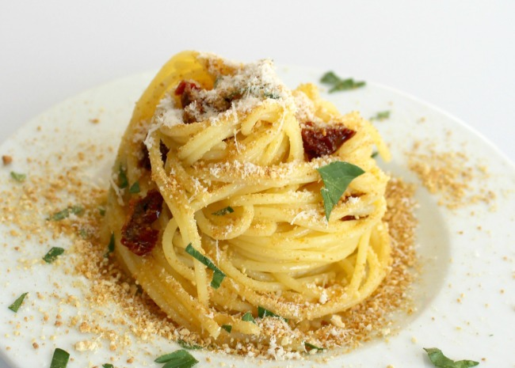

Spaghetti

Description
There are lots of different spagetti recipes out there.
Why not try a Sicilian recipe this time?
Ingredients
- 1 pound spaghetti
- 4 tablespoons olive oil
- 3 cloves garlic
- 1 can anchovy fillets
- 1 cup breadcrumbs
- ground pepper to taste
- 4 tablespoons freshly grated Parmesan
Steps
- Bring a large pot of lightly
salted water to a boil.
Add pasta and cook for 8 to 10 minutes or until al dente;
drain.
- Meanwhile, in a medium skillet, heat olive oil
over medium heat and add garlic and anchovies to
cook for about 2 minutes; stir constantly.
- Stir in breadcrumbs and turn off heat.
Add parsley and black ground pepper; mix together.
- Toss anchovy sauce with hot pasta and sprinkle with cheese; serve.